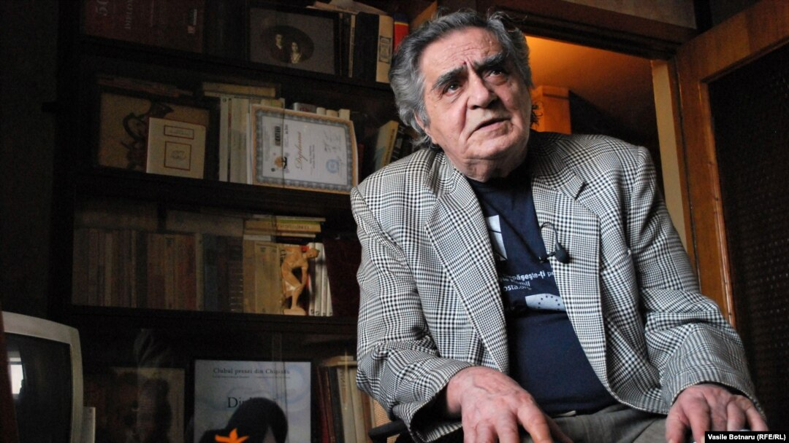
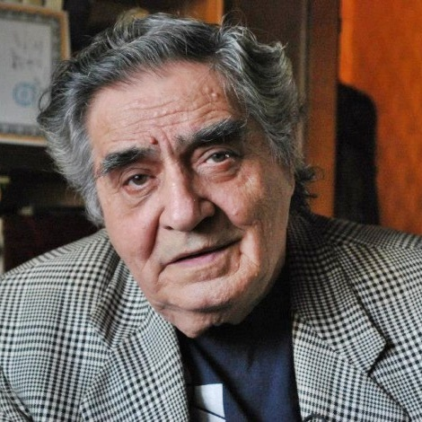
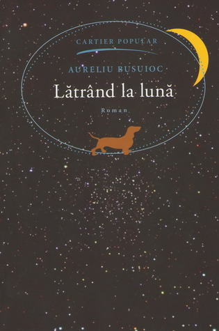
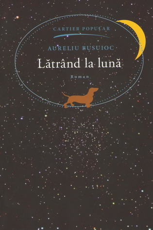
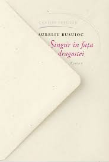
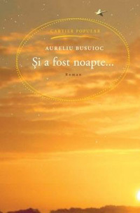
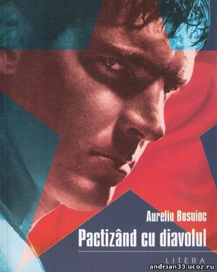

AURELIU BUSUIOC
Date biografice
Publicatii

Aureliu Busuioc (n. 26 octombrie 1928, Codreanca, judetul interbelic Orhei, azi in raionul Straseni – d. 9 octombrie 2012) a fost un poet, prozator, dramaturg, eseist, jurnalist, publicist, redactor, director, romancier, scenarist, scriitor si traducator din Republica Moldova. Aureliu Busuioc s-a nascut pe 26 octombrie 1928 in satul Codreanca din judetul interbelic Orhei.[3][4] Provine dintr-o familie de invatatori. A urmat liceul „T. Boga” din Timisoara. A invatat si la Scoala Militara de Ofiteri Activi de Transmisiuni din Sibiu, pe care a abandonat-o in timpul examenelor finale pentru a fi "repatriat".[5] Revine in Moldova in 1949. Studiaza la Institutul Pedagogic de Stat „Ion Creanga” din Chisinau. Publica epigrame, parodii, poezii umoristice in ziarul „Tinerimea Moldovei” si revista „Chiparus”. Are un debut dublu – placheta pentru copii „La padure” (1955) si volumul de versuri satirice „Prafuri amare” (1955). Editeaza ulterior plachetele: „Piatra de incercare” (1958), „Firicel de floare rara” (1961) si „Aventurile lui Natafleata” (1961), „Cizmele cocostircului” (1967), „Marele ratoi Max” (1968), ultimele destinate copiilor. In 1966 publica romanul „Singur in fata dragostei”, manifestandu-se si ca romancier. A fost sef de sector la ziarul „Moldova socialista”, redactor-sef adjunct la revista „Chiparus”, redactor-sef la ziarul „Tinerimea Moldovei”, consultant literar, iar in 1977-1987 secretar al Comitetului de conducere al Uniunii Scriitorilor din Moldova. Traduce din literatura rusa si universala, din operle scriitorilor Alexandru Blok, Anton Cehov, Nicolai Gogol, Alexandr Puskin, Alexandr Griboedov, Maxim Gorki, Mihail Solohov, Sándor Petőfi, O. Henry, Byron, ... . Romanul sau Singur in fata dragostei (1966) a fost ecranizat la Moldova-film. A fost de asemenea autor al mai multor scenarii de film. S-a stins din viata pe 9 octombrie 2012, in locuinta sa.

 
Opere

Opere
Aureliu Busuioc este recunoscut ca un bun scriitor de fictiune si romane:
- Calatorie in aprilie
- Singur in fata dragostei
- Unchiul din Paris
- Satele Moldovei
- Vreau sa cant
- Latrand la luna
- Cursa
- Pactizand cu diavolul
- Spune-mi Cioni
- Si a fost o noapte
Dar si ca un minunat poet:
- Batranul poet
- Evolutie
- Vecinii
- Impresionista
- Tehnicolor
- Arghezi
- Din intelesul cuvintelor
- Fiului
- Maladie
- Inscriptie
- Iar uneori...
- Corabii
- Insomnie
- Concert
- Am vrut candva...
- Scriu
- Si alt Don Quijote
- Cantec de leagan
- Metamorfoza
- Alter ego
- Un om a vorbit cu marea
- Ancestrala
